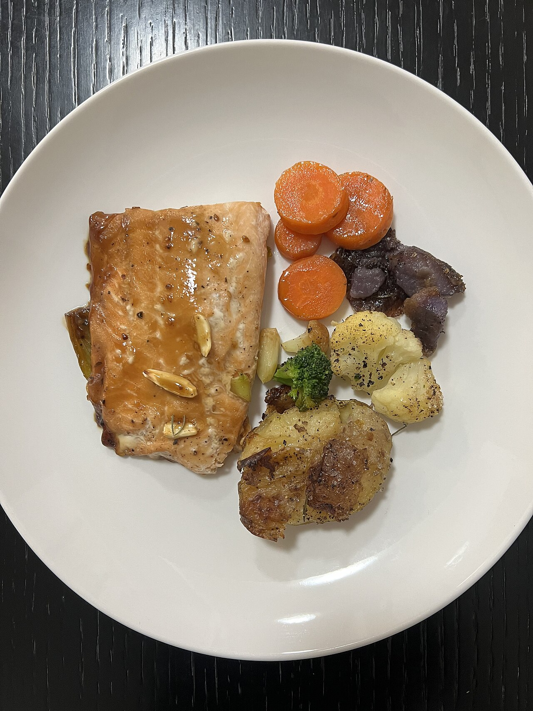

為什麼不建議節食？
成長期不建議刻意節食或少吃很多，否則會影響長高和發育。只要飲食習慣改對，身高繼續長、體重增加變慢，身形自然會變勻稱。
六個具體做法
| 做法 | 具體例子 |
|---|---|
| 不喝含糖飲料 | 手搖飲、汽水、果汁改成水、無糖茶、鮮奶。這是效果最大的一步 |
| 餐盤比例 | ½ 蔬菜、¼ 蛋白質（魚、雞、蛋、豆腐）、¼ 澱粉（盡量選糙米、地瓜等原型食物） |
| 美食照吃，但有節奏 | 炸物、甜點、宵夜不必禁止，改成「每週幾次，用心享受」，不要天天吃 |
| 吃飯慢一點 | 一餐吃 15–20 分鐘以上，飽足感比較來得及出現 |
| 運動後的補給 | 游泳、滑雪後很餓很正常，可以吃香蕉配鮮奶、飯糰、優格，不要直接吃洋芋片或喝含糖飲料 |
| 鈣和蛋白質要足夠 | 長骨頭需要奶類、豆製品、小魚乾和深綠色蔬菜 |
把「愛吃」變成「會做菜」
學做幾道健康又好吃的料理，例如烤雞腿、日式蒸魚、蔬菜咖哩。對食物有掌控感，比被限制有效得多，也是一輩子受用的技能。

本頁結論
- 不節食，先不喝含糖飲料，效果最大
- 每餐一半是蔬菜，澱粉選原型食物
- 美食可以吃，但不要天天吃；學會自己做菜